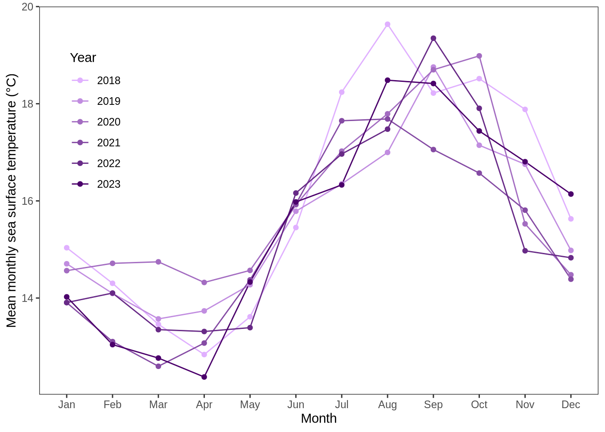
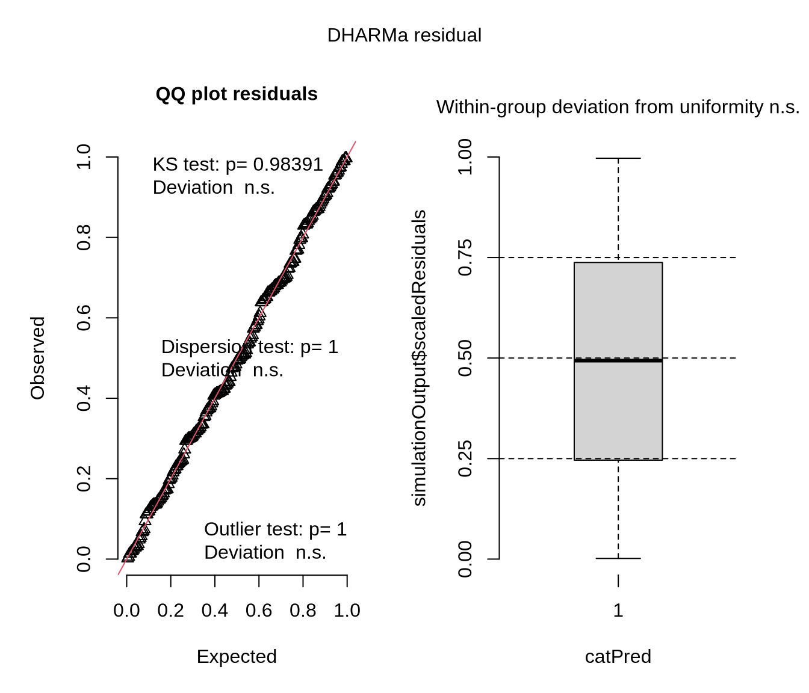
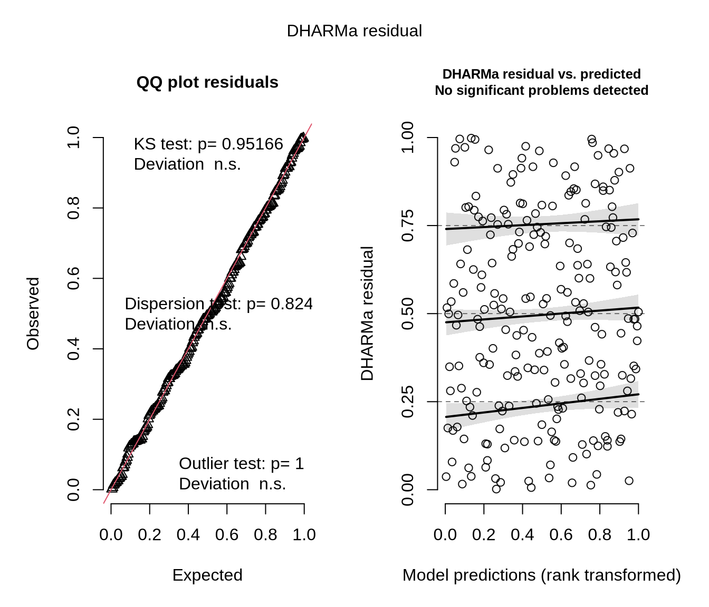
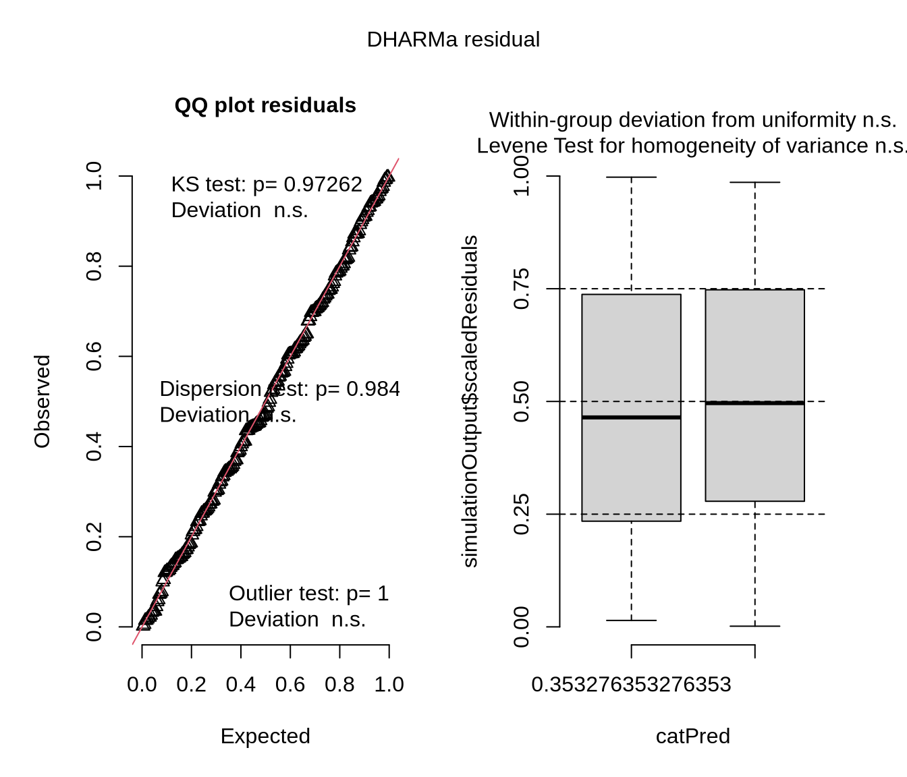
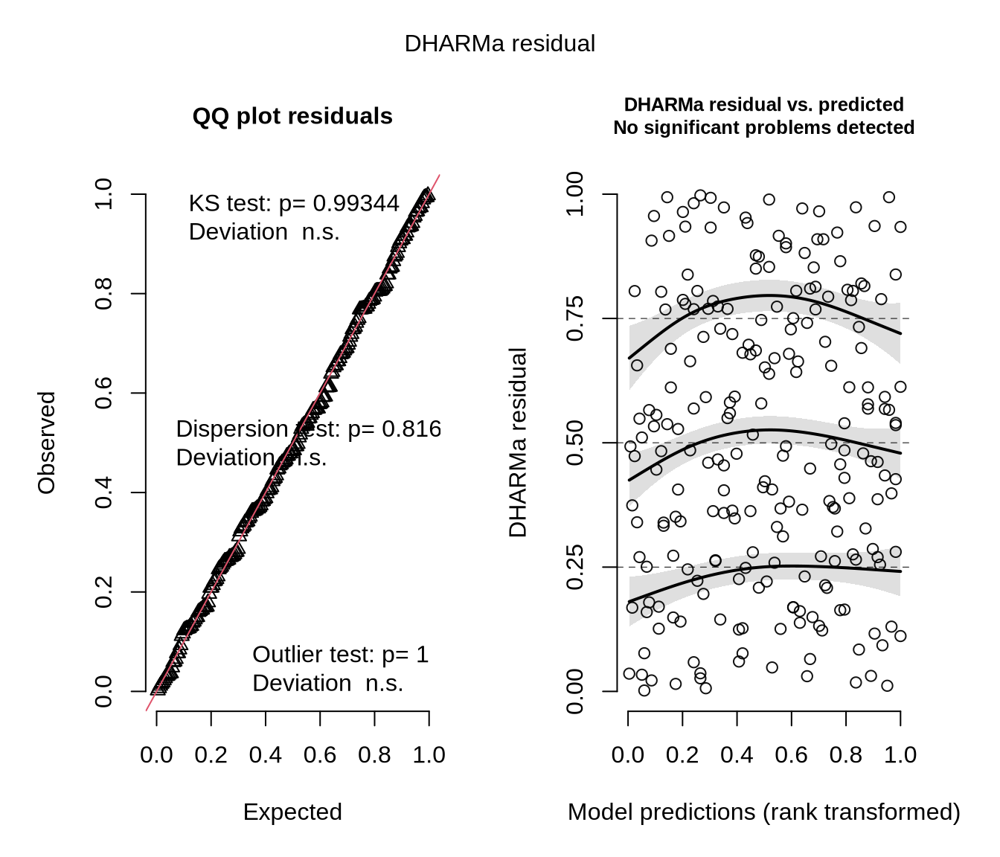
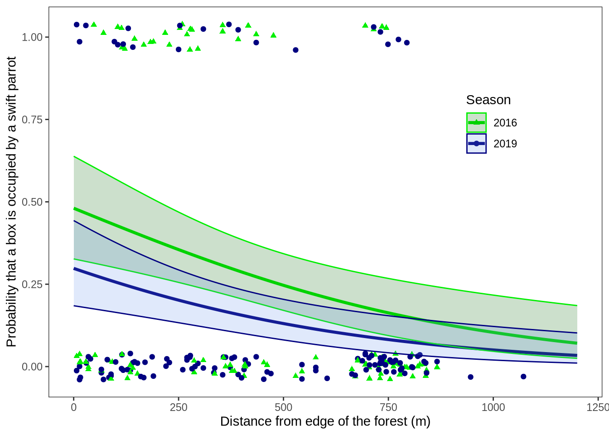

Warning: package 'tidyverse' was built under R version 4.4.2
Warning: package 'purrr' was built under R version 4.4.2
Warning: package 'lubridate' was built under R version 4.4.2
── Attaching core tidyverse packages ──────────────────────── tidyverse 2.0.0 ──
✔ dplyr 1.1.4 ✔ readr 2.1.5
✔ forcats 1.0.0 ✔ stringr 1.5.1
✔ ggplot2 3.5.1 ✔ tibble 3.2.1
✔ lubridate 1.9.4 ✔ tidyr 1.3.1
✔ purrr 1.0.4
── Conflicts ────────────────────────────────────────── tidyverse_conflicts() ──
✖ dplyr::filter() masks stats::filter()
✖ dplyr::lag() masks stats::lag()
ℹ Use the conflicted package (<http://conflicted.r-lib.org/>) to force all conflicts to become errors
library(janitor)
Warning: package 'janitor' was built under R version 4.4.2
Attaching package: 'janitor'
The following objects are masked from 'package:stats':
chisq.test, fisher.test
library(scales)
Attaching package: 'scales'
The following object is masked from 'package:purrr':
discard
The following object is masked from 'package:readr':
col_factor
library(DHARMa)
This is DHARMa 0.4.7. For overview type '?DHARMa'. For recent changes, type news(package = 'DHARMa')
library(MuMIn)library(knitr)
Warning: package 'knitr' was built under R version 4.4.3
sst <-read.csv("../data/SST_update2023.csv") #read in the sea-temp datanest_boxes <-read.csv("../data/occdist.csv") #reading in the nest boxes data
Problem 1
a.
My coworker used a Pearson’s r test in part 1, as it tests for correlation. They used a one-way analysis of variance (ANOVA) in part 2 since they were checking to see if there was a difference in the means of multiple groups based on a single explanatory variable (in this case the average nitrogen load (kg year⁻¹))
b.
Two things they should have included are the degrees of freedom and the F-statistic. The F-statistic is the main output of an ANOVA, and it shows the ratio of variance between group means to the variance within group means. In this case, since the test rejected the null hypothesis, the F-statistic would probably be high and indicate that the difference in the mean nitrogen load (kg year⁻¹) of each of the groups (urban land, etc) was larger than the difference within each of those groups, with a higher F-statistic meaning the average nitrogen load varies much less within groups compared to how those groups compare to each other. Knowing the F-statistic allows us to better we can understand how different the means of the groups are. The degrees of freedom allow the reader to better understand how much information was used in the ANOVA and know the rough shape of the F-distribution. In this case, a higher df means more locations of each source type were sampled, so they would have more data points to work with.
c.
We found a statistically significant difference between average nitrogen load (kg year⁻¹) between sources (urban land, atmospheric deposition, fertilizer, wastewater treatment, and grasslands) (one-way ANOVA, F(df_between, df_within) = F-statistic, p = 0.02, α = significance level).
We also found a [+/-, strength] correlation between distance from headwater (km) and annual total nitrogen load (kg year⁻¹) (Pearson’s correlation, r(df) = correlation coefficient, p=0.03 α = significance level)
Problem 2.
a.
sst_clean <- sst %>%clean_names() %>%#cleaning the data namesmutate(year =year(date), #adding a year column with the year based on the date columnmonth =month(date, label =TRUE, abbr =TRUE)) %>%#adding a month column based on the month in the date column (and turning it into the actual words for those months instead of just the numbers)filter(year >2017) %>%#use only years after 2017mutate(year =factor(year)) %>%#turn year into a factorgroup_by(year, month) %>%#group by the month and the yearsummarize(mean_monthly_sst =mean(temp, na.rm =TRUE), #find the mean of each month in each year and add it to a new column.groups ="drop" )slice_sample(sst_clean, n =5) #show 5 rows from the dataframe
# A tibble: 5 × 3
year month mean_monthly_sst
<fct> <ord> <dbl>
1 2018 Sep 18.2
2 2021 Nov 15.8
3 2021 Aug 17.7
4 2019 Jul 16.3
5 2019 May 14.3
str(sst_clean) #shows the structure of the dataframe
year_levels <-levels(sst_clean$year) #making a new object that's the levels from the year columnn_years <-length(year_levels) #another object that's just the length of year_levelcolors <-gradient_n_pal(c("#E0B0FF", "#4B006B"))(seq(0, 1, length.out = n_years)) #an object called colors that makes there be a gradient n levels long from the first color to the second color, where n is the number of levels in yearsnames(colors) <- year_levelsggplot(sst_clean, #data frameaes(x = month, #axis assignmenty = mean_monthly_sst,color = year, #color by yeargroup = year))+#group by yeargeom_line() +#add a line graphgeom_point() +#add a point graphtheme_bw() +#bw themetheme(panel.grid.major =element_blank(), panel.grid.minor =element_blank()) +#removing the gridlinesxlab("Month") +#labeling the axisylab("Mean monthly sea surface temperature (°C)") +theme(legend.position =c(0.1, 0.7)) +#changing the legend positionlabs(color ="Year") +#changing legend titlescale_color_manual(values = colors) #changing the colors to the gradient
Warning: A numeric `legend.position` argument in `theme()` was deprecated in ggplot2
3.5.0.
ℹ Please use the `legend.position.inside` argument of `theme()` instead.

Problem 3
a.
The 1s and 0s are basically saying if the bird in that column used the box or not, so for the column labeled sp a 1 means a swift parrot used the box while a 0 means another species used the box/the box was empty, and for the cs column a 1 means a common starling used the box while a 0 means a common starling did not use the box.
b.
This study is talking about nest boxes as a conservation tool, and while the common starling and the tree martin are both common animals, the swift parrot is critically endangered and therefor is actually in need of the nest boxes to help it. The boxes are also specifically designed to be the most useful for the parrots as the parrots are very selective about where they nest and the boxes were designed with the parrots’ preferred parameters in mind.
c.
Season in this case refers to the summer breeding seasons of 2016 and 2019. The main difference is that the boxes were set up in 2016 before the breeding season and then left there, so in the 2019 breeding season the boxes were already there for a few years instead of being new for the birds to find.
d.
table <-data.frame( #making a dataframemodel.number =c(1, 2, 3, 4), #adding a model number columnseason =c("", "X", "X", ""), #checking off which predictors will be in each modeledge.distance =c("", "X", "", "X"), #see above commentdescription =c("no predictors (null model)", "all predictors (saturated model)", "only season as predictor", "only distance to forest edge as predictor")) #describing the predictors in each model (there's 2 predictors so there's 4 possible combinations)kable(table, align =c("c", "c", "c", "l")) #aligns the table to make it a little more readable
model.number
season
edge.distance
description
1
no predictors (null model)
2
X
X
all predictors (saturated model)
3
X
only season as predictor
4
X
only distance to forest edge as predictor
e.
nest_boxes$season <-as.factor(nest_boxes$season) #turning the season column to a factor or it will treat it as continuous data and mess stuff upmodel0 <-glm( #model 0 (null model) sp ~1, #what predictors to use (none)data = nest_boxes, #datasetfamily = binomial #the data is binomial (just 1s and 0s))model1 <-glm( #model1 (saturated model) sp ~ edge.distance + season, #which predictors to use (both)data = nest_boxes, #where's the data fromfamily = binomial #the data is binomial (just 1s and 0s))model2 <-glm( sp ~ season, #just season as the predictordata = nest_boxes,family = binomial)model3 <-glm( sp ~ edge.distance, #just edge distance as predictordata = nest_boxes,family = binomial)
f.
res0 <-simulateResiduals(model0) #simulate residualsres1 <-simulateResiduals(model1)res2 <-simulateResiduals(model2)res3 <-simulateResiduals(model3)plot(res0) #plots diagnostic plots for the models

plot(res1)

plot(res2)

plot(res3)

g.
AICc( #uses Akaike's Information Criterion on the models model0, model1, model2, model3) |>arrange(AICc) #sorts the results in acending order
The best model as determined by Akaike’s Information Criterion (AIC) was the saturated model, which used both season and distance to forest edge as the predictors for swift parrot occupancy (AICc 226.3133)
h.
graph_prediction <-expand.grid(edge.distance =seq(0, 1200, by =1), season =unique(nest_boxes$season)) #sets a new dataframe for the predictions and extends it out to 1200 for edge distance so as to predict beyond the scope of the datapredictions <-predict(model1, newdata = graph_prediction, type ="link", se.fit =TRUE) #generates predictions based on the logit scale using model1 (the saturated model) and gets the standard error of the fitfit <- predictions$fit #gets the predicted valuesse <- predictions$se.fit #and their standard errorgraph_prediction$fit <- fit #adding a new column to the graph_predictions data frame for the predicted valuesgraph_prediction$ci_lower_pre <- fit -1.96* se #adding a new column to the data frame for the lower bound of the cigraph_prediction$ci_upper_pre <- fit +1.96* se #adding an upper ci columngraph_prediction$predicted.sp <-plogis(fit) #changing all the values from the logit to the probability scalegraph_prediction$ci.lower <-plogis(graph_prediction$ci_lower_pre)graph_prediction$ci.upper <-plogis(graph_prediction$ci_upper_pre)ggplot(graph_prediction, #uses data from graph_predictionaes(x = edge.distance, #determines the x and y axesy = predicted.sp,color = season)) +#color by seasongeom_line(linewidth =1.2) +#makes a line that follows the prediction datageom_jitter(data = nest_boxes, #using data from the original datasetaes(y = sp, #using the binary catagorical data on the y axiscolor = season, #color and shape by season to distinguish the datashape = season),height = .04, #jitter by height for visibilitywidth =0) +#don't jitter at all on the x axis for accuracygeom_ribbon( #add a ribbon for the 95% ciaes(ymin=ci.lower, #sets the upper and lower bounds of the ci ribbonymax=ci.upper,fill = season), #fill color by seasonalpha=0.2) +#transparency factorscale_color_manual(values =c("2016"="green2", "2019"="navy")) +#choosing colors for the center lines and jitterplotscale_fill_manual(values =c("2016"="darkgreen", "2019"="cornflowerblue")) +#choosing color for the ribbonsscale_shape_manual(values =c("2016"=17, "2019"=19)) +#choosing shapes for the jitterplotxlab("Distance from edge of the forest (m)") +#x-axis labelylab("Probability that a box is occupied by a swift parrot") +#y-axis labeltheme_bw() +#themetheme(panel.grid.major =element_blank(), panel.grid.minor =element_blank()) +#remove the gridlinestheme(legend.position =c(0.8, 0.7)) +#mode the legendlabs(color ="Season", fill ="Season", shape ="Season") #rename the legend and solidify all in one space

i.
Figure 1: Swift Parrot Nest Box Occupancy Probability by Distance from Forest Edge (2016 vs. 2019) Data source: https://doi.org/10.5061/dryad.83bk3j9sb. The lines are the estimated probability of swift parrot occupancy in nest boxes as a function of distance from the forest edge, comparing data from the 2016 and 2019 breeding seasons. Shaded ribbons represent 95% confidence intervals around model predictions, and colors represent the season (green: 2016 season, blue: 2019 season) Points represent actual observations of swift parrots inhabiting the nest boxes as a binary categorical response variable compared to distance from the forest edge. The points are jittered on the y-axis for visibility but fixed on the x-axis for accuracy. Colors and shapes representing the seasons (green triangles: 2016 season, blue circles: 2019 season).
j.
edge_calculation <-expand.grid(edge.distance =c(0, 900), season =c("2016", "2019")) #making a grid that's just 2 columns, one with the seasons and one with the distances 0 and 900, and with each combination of values.predictions2 <-predict(model1, newdata = edge_calculation, type ="link", se.fit =TRUE) #predict values from the saturated model for the new data frame, with the standard error included.fit2 <- predictions2$fit #getting th predicted valuesse2 <- predictions2$se.fit #and their standard errorsedge_calculation$predicted_prob <-plogis(fit2) #changing values from the logit scale to the probability scale and then adding them as columns in the data frameedge_calculation$ci_lower <-plogis(fit2 -1.96* se2)edge_calculation$ci_upper <-plogis(fit2 +1.96* se2)edge_calculation #output the data frame
I found that the probability of nest occupancy for swift parrots decreases as you get further away from the forest’s edge, and further decreased from the 2016 to the 2019 season (new boxes vs. established boxes). These numbers are backed up by the calculated probabilities of swift parrot occupation in nest boxes at 0 and 900 meters from the forest edge in 2016 (0.481 and 0.125 respectively) and 2019 (0.298 and 0.061). These data show that nest boxes are more helpful to swift parrots when they’re closer to the forest edge, and also that newer boxes are much more useful than established boxes (since the nest box occupancy was much higher in 2016 when the boxes were first laid out). The paper made models for the competing birds which show that the common starlings tend to avoid the center of the forest even more than the swift parrots, but have substantially higher occupancy in boxes near the forests’ edge for established boxes (2019 season), whereas the tree martin tends to dominate the spaces away from the forests’ edge, and especially migrate to established boxes further in the forest (much higher occupancy away from the forest edge in the 2019 season)(Stojanovic et al. 2021). This suggests that, although swift parrots have the advantage at occupying new boxes at the edge of the forest, the tree martins out-compete them in the forests’ interior and the common starlings out-compete them once the boxes have been established, which accounts for the trend of swift parrot occupancy decreasing the further in the forest you go and the more time passes.
Problem 4.
I would say that the main ways that the visualizations from homeworks 2 and 3 differ from each other is the medium used to represent them, the context given, and accuracy. In homework 2 the visualization was represented just on the screen, generated by r and with a generic box and jitter plot (with custom colors and shapes), while the affective visualization I made for homework 3 was made out of food and cans and boxes. In addition to the medium being different, the charts r creates come with axis and a legend while the affective visualization had neither of those, and was also slightly less accurate since I can’t put the boxplot lines out of cardboard down as accurately and precisely as a computer can. I think the similarities are clear in that the underlying data is close to the same so they just visually look very similar. I can see the homework 2 box and jitter plot pretty clearly in the homework 3 affective visualization, even though new data had been added by then. The trends were pretty similar between visualizations, and they were mostly that on days when I was stressed there was a much smaller variety of times I ate, whereas on days where I wasn’t stressed there was a much larger range of values. The two biggest pieces of feedback I got were to take a photo from a higher angle and to clarify which side was the stressed side. I fixed this by standing on a chair to get a better angle, and to add some school supplies next to the boxplot showing the data from when I was stressed.